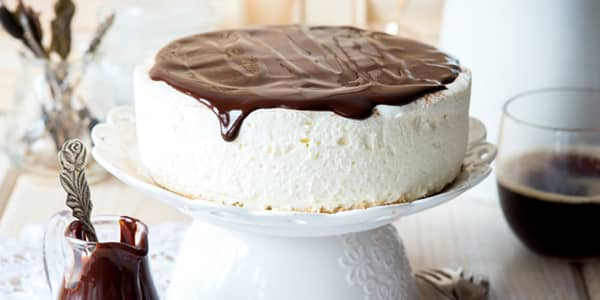
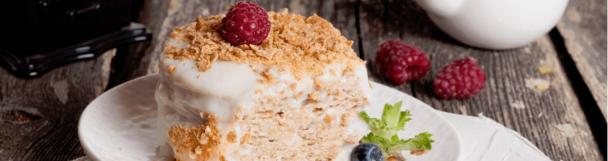

Малиновий торт-мрозиво
Малиновий торт-морозиво — це вишукане поєднання ніжного вершкового морозива й ароматної малини на основі з хрусткого пісочного печива. Прекрасний варіант, коли хочеться кинути виклик традиційним десертам і приготувати щось незвичайне! Десерт не тільки легкий і чудово освіжає, але й має ефектний вигляд: улюблені ягоди на білосніжній подушці з морозива створюють неймовірно апетитний контраст кольорів.
Торт «Пташине молоко»

Ніжні коржі й повітряне суфле, вкрите глянцевою шоколадною глазур’ю, — це легендарний торт «Пташине молоко», смак якого багато з нас пам’ятають із дитинства.
Наполеонівські плани: Торт «Наполеон»

Якщо ви запитаєте в себе, чого б хотілося на десерт, що вам перше прийде у голову? Звісно ж, торт! Навіть ті, хто не вважає себе шанувальником мучного та солодкого, куштували торти різних видів. Один з найбільш знаменитих своєю м’якістю та ніжністю смаку це торт «Наполеон». Напевно, не дарма його назвали іменем великого генерала — загарбника мільйонів. Класичний торт «Наполеон» підкорив мільйони любителів солодкого, і ця перемога цілком та повністю заслужена.